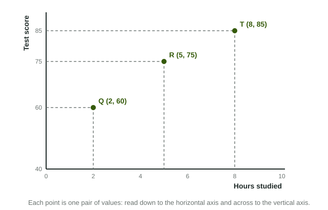

Every graph in this course is a picture of two variables at once. Before you can read what a graph says, or draw one that earns its points on the exam, you need the parts every graph shares: two labeled axes and the points between them.
Two axes, two variables
A graph has two number lines. The horizontal axis runs across the bottom; the vertical axis runs up the left side. They meet at the origin, the corner where both values are zero (or the lowest value shown). Each axis measures one variable, and its label says which one. An axis with no label is a number line with no meaning.
Economics uses a fixed pairing for each graph. A market graph puts Price on the vertical axis and Quantity on the horizontal axis. That can feel backward if you think of quantity as the thing that "depends" on price, but it is the standard, and a reader expects it. Swapping the axes is not a style choice; it is a wrong graph.
Coming up in the course. You will draw eight kinds of graph, each with its own fixed axes (plus one table, a bank's balance sheet): the production possibilities curve (one good on each axis), supply and demand (Price, Quantity), aggregate demand and aggregate supply (Price level, Real GDP), the money market (Nominal interest rate, Quantity of money), the market for bank reserves (Policy interest rate, Quantity of reserves), loanable funds (Real interest rate, Quantity of loanable funds), the Phillips curves (Inflation rate, Unemployment rate) and the foreign exchange market (the price of one currency in units of another, Quantity of that currency). Each one is taught when you need it.
A point is an ordered pair

A point on a graph stands for one pair of values, written as an ordered pair: (horizontal value, vertical value). The order matters. In the figure, point R is (5, 75): 5 hours studied across the bottom, a score of 75 up the side. The pair (75, 5) would be a different point, 75 hours and a score of 5.
To plot a point, start at the origin, move right to the horizontal value, then up to the vertical value. To read one, drop a dashed line straight down to the horizontal axis and another straight across to the vertical axis. Those dashed lines are exactly what an exam graph uses to mark a price or a quantity, such as P1 and Q1.
Worked example: plot a table. A theater sells 500 tickets a day at $6, 400 at $8, 300 at $10 and 200 at $12. Plot the row for $10 on a market graph.
- Choose the axes. On a market graph, Price is vertical and Quantity is horizontal.
- Write the ordered pair. Horizontal value first: 300 tickets, then the price: (300, 10).
- Plot it. Move right to 300, then up to $10, and mark the point. Do the same for the other rows: (500, 6), (400, 8), (200, 12).
- Read the pattern. Joining the points gives a line that falls as it moves right: higher prices come with fewer tickets.
Direct and inverse relationships
Once several points are plotted, the graph shows how the two variables move together. In a direct relationship (also called positive), both rise together or fall together: hours worked and weekly pay. In an inverse relationship (also called negative), one rises as the other falls: the price of tickets and the number sold, or the outdoor temperature and cups of hot chocolate sold.
| Direct (positive) | Inverse (negative) | |
|---|---|---|
| As one variable rises | the other rises | the other falls |
| The points | climb to the right | fall to the right |
| Example | hours worked and pay | ticket price and tickets sold |
What a reader checks first
On the free-response section, graphs are scored point by point, and the first point is nearly always the labels: every axis and every curve. A correct drawing with a missing label, or with Price and Quantity swapped, loses that point, and often the next one too, because a reader cannot tell which curve moved. Make it a habit: label both axes before you draw anything else, then label each curve as you draw it.